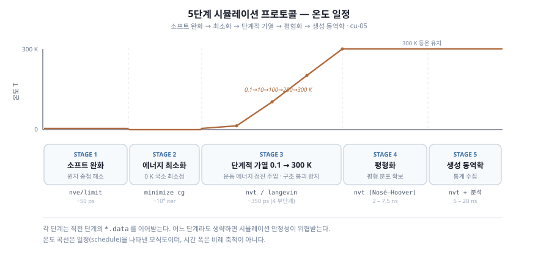

이 예제는 벤젠·에탄올 분자와 Cu 슬랩의 좌표·전하·힘장 계수를 담은
opls.data / trappe.data 를 전제합니다. 이 데이터
파일은 본 저장소에 포함돼 있지 않으므로, 아래 입력만으로는 그대로 실행되지
않습니다. 또한 생성 단계가 10–20 ns 규모라 워크스테이션급 자원이 필요합니다.
앞의 E3 (Cu 슬랩) 은 데이터 파일 없이 바로
돌아가는, 이 시스템의 금속 기판 부분에 해당하는 예제입니다.
무엇을 다루는 예제인가
Cu(100)/Cu(111) 표면 위에서 벤젠과 에탄올이 표면을 두고 경쟁 흡착하는 계를, OPLS-AA · TraPPE-UA 두 힘장과 PPPM · MSM 두 정전기 방법의 네 조합으로 비교하는 응용 프로토콜이다. 여기서는 그 입력 파일 구성과 다섯 단계 실행 흐름을 한자리에 정리한다. 각 단계의 화학적 정당화는 응용 · 5. 5단계 프로토콜 에서 자세히 다룬다.

모듈식 입력 구성
inputs/ 디렉토리는 힘장·정전기·단계를 분리한 모듈식 파일로 되어 있어, 네
프레임워크를 include 두 줄만 바꿔 전환한다.
| 파일 | 용도 |
|---|---|
common.in |
단위·atom_style·neighbor·comm 공통 설정 |
kspace_pppm.in |
PPPM 정전기 + lj/cut/coul/long (슬랩 보정 포함) |
kspace_msm.in |
MSM 정전기 + lj/cut/coul/msm |
ff_opls_aa.in |
OPLS-AA 결합/각도/이면각/pair 계수 (12 원자종) |
ff_trappe_ua.in |
TraPPE-UA 결합/각도/pair 계수 (6 원자종) |
01_soft.in … 05_prod.in |
5단계 각 stage |
# 예: OPLS-AA + PPPM (각 stage 파일 상단)
include kspace_pppm.in
include ff_opls_aa.in
# TraPPE-UA + MSM 으로 전환하려면 두 줄만 교체
include kspace_msm.in
include ff_trappe_ua.in
다섯 단계 실행 흐름
# 데이터 파일(opls.data 또는 trappe.data)이 준비됐다는 전제하에
lmp_serial -in 01_soft.in # 소프트 완화 (원자 중첩 해소)
lmp_serial -in 02_min.in # 에너지 최소화
lmp_serial -in 03_heat.in # 단계적 가열 0.1 → 300 K
lmp_serial -in 04_eq.in # NVT 평형화
lmp_serial -in 05_prod.in # 생성 동역학 + 분석
# 병렬 (40 코어 예시)
mpirun -np 40 lmp_mpi -in 05_prod.in
각 stage는 직전 stage의 *.data(또는 restart)를 이어받으므로 순서대로 실행한다.
fix freeze_cu copper setforce 0.0 0.0 0.0 로 Cu 슬랩을 고정하고, 상부에는
fix wall/lj93 zhi 벽을 두어 분자가 진공으로 빠져나가지 않게 한다.
분석 대상
생성 단계에서는 다음을 측정한다. 상세는 응용 · 7. 분석 방법 을 참고한다.
- 방사 분포 함수
g(r)(Cu-O, Cu-벤젠 C 등) - z 방향 밀도 프로파일 (분자별 계면 분포)
- 분리 효율 지수 SEI (0 완전 혼합 ~ 1 완전 분리)
- 흡착 에너지, 그리고 Irving-Kirkwood 계면 장력
요점
- 모듈식
include구성 덕에 힘장 × 정전기 네 조합을 최소 수정으로 교차 비교한다. - 어느 단계라도 생략하면 안정성이 위협받는다(특히 소프트 완화·단계적 가열).
- 실제 실행에는
opls.data/trappe.data준비가 선행돼야 한다(본 저장소 미포함).
관련 개념 챕터
- 응용 · 5. 5단계 프로토콜 — 단계별 화학적 정당화
- 응용 · 6. 4가지 프레임워크 — 조합별 차이와 선택
- 응용 · 4. 정전기 방법 — PPPM vs MSM, 슬랩 보정
- 응용 · 7. 분석 방법 — RDF·밀도·SEI·계면 장력
앞 예제는 E3 — Cu(100) 슬랩 이다.